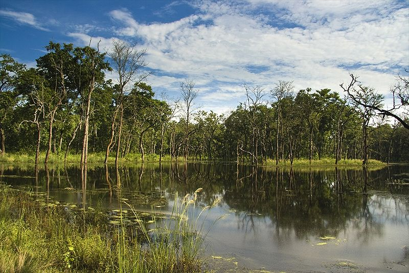

DUDHWA NATIONAL PARK
|  | |||||
Dudhwa National ParkDudhwa National Park or the Dudhwa Tiger Reserve residing the areas of Lakhimpur & Kheri district of Uttar Pradesh, lying adjacent to the Indo-Nepal border bringing together two most incredible sanctuaries of the area namely, Kishanpur and Katerniaghat Wildlife Sanctuaries to represent the excellent natural forests and greenery along the Terai region. The Kishanpur Sanctuary lies in the Lakhimpur- Kheri and Shahajahanpur districts in Uttar Pradesh.Spreading across an expanse of 811 sq km beholding the nature lovers with marshes, grasslands and dense forests, the area is actually meant for tremendous counts of Swamp Deer and Tigers species. The area of the Park is composed of a vast alluvial plain along the tributaries of Mohana and Suheli, interspersed with numerous rivulets, lakes and pools. The rich and extremely fertile Indo-Gangetic plains support a flamboyant growth of forests diversity of fauna. The park has some of the best forests of 'Sal' tree in the world, amongst other flora; and is a virtual unexplored paradise for nature lovers, wildlife enthusiasts and bird watchers. Dudhwa attracts the visitors with its two core area as Dudhwa National Park and Kishanpur Wildlife Sanctuary which are separated by each other with an area of 15 kms agricultural land. Unlike other celebrity parks of India like Corbett, Kaziranga, Bandhavgarh etc, the uncommercialized ambience of this park makes it an ideal habitat for the wild creatures to find nature's serenity & comfortability in a more natural way. 775 Sqr KM forest area between Mohana and Suhaili river was declared as reserved forest in 1861.In 1977 Government declared 614 sqr KM area of district Kheri reserved as Dudwa National Park. Dudwa National Park is known as the Ist National Park of the state after formation of Uttrakhand.Another reserve area “Kishunpur Pashu Vihar” sanctuary located about 30 KM from Dudwa.Spread over about 204 sqr.km. , it lies on the banks of river Sharda and is surrounded by Sal forest of adjoining reserve forests. In 1987 Dudwa National Park and Kishunpur Pashu Vihar was merged to form Dudwa Tiger Reserve (DTR). The Dudwa Tiger Reserve has total area of 818 sqr KM. It is home to a large number of rare and endangered species which includes Tiger, Leopard cat, Slath beer, rinosaurs (One horn), Hispid hare, Elephants, Black deer& Swamp deer etc. | |||||
|
|
|||||